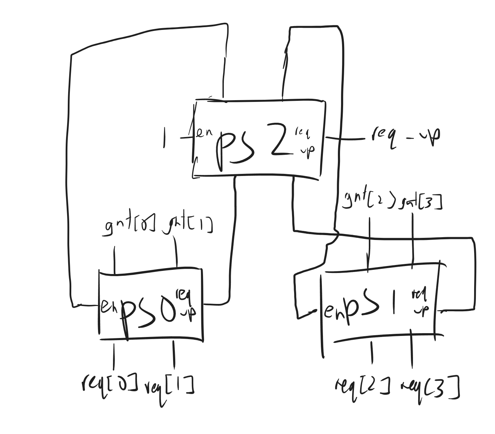

9 Questions - Verilog
Key concepts
- Blocking vs Non-blocking
- How will given code synthesize
- Coding up FIFOs, arbiters, FSMs
Q: Given some Verilog code (blocking vs non-blocking assignment), what will these synthesize to?
Q: Code fizz buzz in Verilog
Q: How does polymorphism work in SystemVerilog?
Q: How do virtual interface work in SystemVerilog?
Q: What do clocking blocks do in SystemVerilog? What are they?
Q: Differences between Verilog and SystemVerilog?
Q: Code a sequence (pattern) detector state machine. How would you verify this state machine?
Q: SV data structures: queues, maps, associative array, dynamic array
Q: Write the code for a FIFO in SystemVerilog
Q: SystemVerilog Fork, Join(). Given some example code with these, what would happen to a task (e.g. a given task could take forever)? What could you do to fix it (e.g. by writing a task to print ERROR if a task doesn’t return by TIMEOUT seconds)?
Q: Traffic light signaling problem in Verilog (state machine). Use counter and output color depending on range using assign statements
Q: Given an FSM state diagram, code it in SystemVerilog
Q: Logic vs wire vs bit in Verilog/SystemVerilog
Q: Write the RTL to generate a signal that is clock for 3 cycles then 0 for 3 cycles
Q: Given 3 enums, constrain 32 bits to be within these 3 enums. Then constrain their distribution
Q: SystemVerilog Assertions. Write assertions for Req and Ack with the given spec:
- Ack should assert within 5-10 cycles after Req asserts
- Ack should deassert within 5-10 cycles after Req desserts
- No Ack should assert before Req
- No Ack should deassert before Req deasserts
Q: CAM & TCAM in SystemVerilog. Modeling with 2D/3D array vs associative array (key as data, addr as value), and pros and cons of these approaches
Q: Write a module to convert binary to gray code (how about vice versa)?
Q: Write a pattern detector that detects input sequence of 101 from a binary stream. (Pattern 1101, 1011 are also common)
Q: Posedge reset vs negedge reset? Why?
Q: Write a stack in Verilog
9.1 Verilog Modules
9.1.1 Asynchronous FIFO
- Asynchronous FIFO: data read and writes use different clock frequencies (i.e. reads and writes are not synchronized)
- Usage: in systems with clock domain crossing to help synchronize data flow between systems in different clock domains. e.g. used to pass data from system A at 100MHz clock to system B at 125MHz clock
9.2 Operation:
References:
9.2.1 Synchronous FIFO
- Key parameters:
- Depth: Number of entries in the FIFO
- Width: Number of bits of each entry
- Synchronous FIFO: data read and write use the same clock frequency
- Operation:
- When write enable is on, write the write data until full. Write pointer gets incremented on every data write
9.2.1.1 Method 1 -
module synchronous_fifo #(parameter DEPTH=8, DATA_WIDTH=8) (
input clk, rst_n,
input w_en, r_en,
input [DATA_WIDTH-1:0] data_in,
output reg [DATA_WIDTH-1:0] data_out,
output full, empty
);
reg [$clog2(DEPTH)-1:0] w_ptr, r_ptr;
reg [DATA_WIDTH-1:0] fifo[DEPTH];
// Set Default values on reset.
always@(posedge clk) begin
if(!rst_n) begin
w_ptr <= 0; r_ptr <= 0;
data_out <= 0;
end
end
// To write data to FIFO
always@(posedge clk) begin
if(w_en & !full)begin
fifo[w_ptr] <= data_in;
w_ptr <= w_ptr + 1;
end
end
// To read data from FIFO
always@(posedge clk) begin
if(r_en & !empty) begin
data_out <= fifo[r_ptr];
r_ptr <= r_ptr + 1;
end
end
assign full = ((w_ptr+1'b1) == r_ptr);
assign empty = (w_ptr == r_ptr);
endmoduleReferences:
9.2.2 Arbiter
Case Statement Implementation
casez (req[3:0])
4'b???1 : grant <= 4'b0001;
4'b??10 : grant <= 4'b0010;
4'b?100 : grant <= 4'b0100;
4'b1000 : grant <= 4'b1000;
4'b0000 : grant <= 4'b0000;
endcaseAssign Statement
grant[0] = req[0];
grant[1] = ~req[0] & req[1];
grant[2] = ~req[0] & ~req[1] & req[2];
// ...etc...Parameterized Assign
parameter N = 16; // Number of requesters
// For example, higher_pri_reqs[3] = higher_pri_reqs[2] | req[2];
assign higher_pri_reqs[N-1:1] = higher_pri_reqs[N-2:0] | req[N-2:0];
assign higher_pri_reqs[0] = 1'b0;
assign grant[N-1:0] = req[N-1:0] & ~higher_pri_reqs[N-1:0];References:
9.2.3 Round-Robin Arbiter
References:
9.2.3.1 Naive
always_comb begin
case (pointer_reg)
2'b00 :
if (req[0]) grant = 4'b0001;
else if (req[1]) grant = 4'b0010;
else if (req[2]) grant = 4'b0100;
else if (req[3]) grant = 4'b1000;
else grant = 4'b0000;
2'b01 :
if (req[1]) grant = 4'b0010;
else if (req[2]) grant = 4'b0100;
else if (req[3]) grant = 4'b1000;
else if (req[0]) grant = 4'b0001;
else grant = 4'b0000;
2'b10 :
if (req[2]) grant = 4'b0100;
else if (req[3]) grant = 4'b1000;
else if (req[0]) grant = 4'b0001;
else if (req[1]) grant = 4'b0010;
else grant = 4'b0000;
2'b11 :
if (req[3]) grant = 4'b1000;
else if (req[0]) grant = 4'b0001;
else if (req[1]) grant = 4'b0010;
else if (req[2]) grant = 4'b0100;
else grant = 4'b0000;
endcase // case(req)
end
// Pointer Reg Logic:
logic [1:0] pointer_req, next_pointer_req;
always @(posedge clock) begin
if (reset) pointer_req <= '0;
else pointer_req <= next_pointer_req;
end
always_comb begin
assign next_pointer_req = 2'b00;
casez (gnt)
4'b0001: next_pointer_req = 2'b01;
4'b0010: next_pointer_req = 2'b10;
4'b0100: next_pointer_req = 2'b11;
4'b1000: next_pointer_req = 2'b00;
endcase
end 9.2.3.2 Rotate + Priority + Rotate
- Idea: rotate by amount specified by pointer, feed to simple arbiter, then rotate back
9.2.3.3 MUXed Parallel Priority Arbiter
Rotate-i block rotates the request by i positions (just rewiring)
Pointer selects the intermediate grant vectors to use
Critical path: MUX tree (that can be built with 2:1 MUXes in logN complexity)
Reference: Code Source
module muxed_rr_arb(
input logic clock,
reset,
input logic [3:0] req,
output logic [3:0] gnt
);
logic [3:0] mux_ip0, mux_ip1, mux_ip2, mux_ip3;
//Instantiate fixed priority arbiter and calculate the grant output for shifted priorities
fixed_pri_arbiter inst0 (.req(req), .gnt(mux_ip0));
fixed_pri_arbiter inst1 (.req(req>>1), .gnt(mux_ip1));
fixed_pri_arbiter inst2 (.req(req>>2), .gnt(mux_ip2));
fixed_pri_arbiter inst3 (.req(req>>3), .gnt(mux_ip3));
//Select line pointer calculation
logic [1:0] pointer_req, next_pointer_req;
always @(posedge clock) begin
if (reset) pointer_req <= '0;
else pointer_req <= next_pointer_req;
end
always_comb begin
assign next_pointer_req = 2'b00;
casez (gnt)
4'b0001: next_pointer_req = 2'b01;
4'b0010: next_pointer_req = 2'b10;
4'b0100: next_pointer_req = 2'b11;
4'b1000: next_pointer_req = 2'b00;
endcase
end
//Final output
always_comb begin
case (pointer_req)
2'b00: gnt = mux_ip0;
2'b01: gnt = mux_ip1;
2'b10: gnt = mux_ip2;
2'b11: gnt = mux_ip3;
endcase
end
endmodule9.2.4 Rotating Priority Selector

// 2-Bit Rotating Priority Selector
module rps2(
input [1:0] req,
input sel,
input en,
output logic req_up,
output logic [1:0] gnt
);
// Set grant lines
assign gnt[1] = en && req[1] && (sel || (~sel && ~req[0]));
assign gnt[0] = en && req[0] && (~sel || (sel && ~req[1]));
// req_up is asserted if either request is asserted (no matter the value of the enable)
assign req_up = req[1] || req[0];
endmodule
// ---- N-Bit Rotating Priority Selector ----
module rps #(parameter NUM_LINES = `NUM_LINES_DEFAULT) (
input clock,
input reset,
input [NUM_LINES-1:0] req,
input en,
output [NUM_LINES-1:0] gnt,
output req_up
`ifdef DEBUG
,
output logic [$clog2(NUM_LINES)-1:0] rps_priority
`endif
);
logic [$clog2(NUM_LINES)-1:0] count;
assign rps_priority = count;
rps_counter #(.NUM_LINES(NUM_LINES)) cnt(
.clock(clock),
.reset(reset),
.count(count)
);
logic [NUM_LINES-2:0] [$clog2($clog2(NUM_LINES))-1:0] sel_idx;
wire [NUM_LINES-2:0] req_ups;
wire [NUM_LINES-2:0] enables;
assign req_up = req_ups[NUM_LINES-2];
assign enables[NUM_LINES-2] = en;
genvar i,j;
generate
// not well-defined for NUM_LINES < 2 (what are you selecting between?)
if (NUM_LINES == 2) begin
rps2 single (
.req (req),
.sel (count),
.en (en),
.req_up (req_up),
.gnt (gnt)
);
end else begin
for(i = 0; i < NUM_LINES/2; i = i+1) begin
rps2 base (
.req (req[2*i+1:2*i]),
.sel (count[0]),
.en (enables[i]),
.req_up (req_ups[i]),
.gnt (gnt[2*i+1:2*i])
);
end
for(j = NUM_LINES/2; j <= NUM_LINES-2; j = j+1) begin
assign sel_idx[j] = $ceil($ln(NUM_LINES)/$ln(2) - $ln(NUM_LINES-1-j)/$ln(2) - 1);
rps2 top (
.req (req_ups[2*j-NUM_LINES+1:2*j-NUM_LINES]),
.sel (count[sel_idx[j]]),
.en (enables[j]),
.req_up (req_ups[j]),
.gnt (enables[2*j-NUM_LINES+1:2*j-NUM_LINES])
);
end
end
endgenerate
endmodule